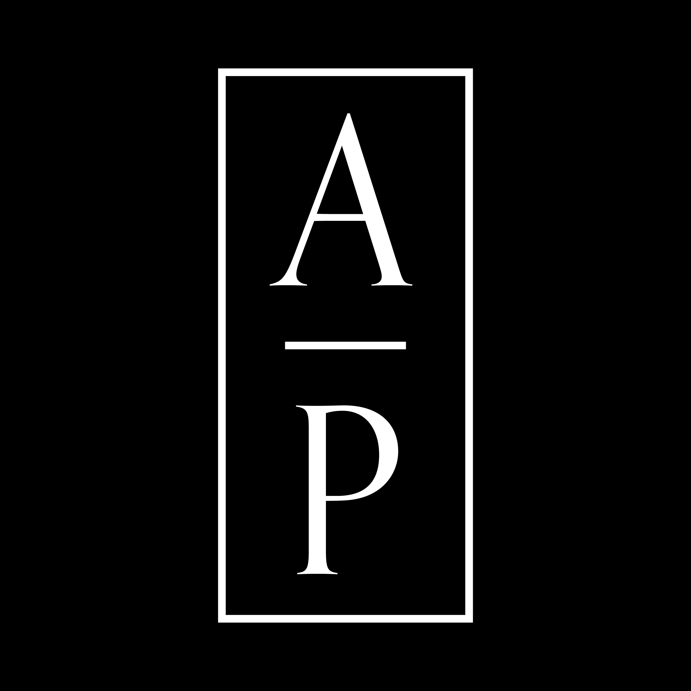

Decision needed: Where should it be?
Abiding Practice needs a path from attention to participation, support, and paid creative work.
The platform job is to connect media, events, artists, partners, members, and jobs so the community can gather, sustain artists, and keep momentum after each public moment.
Films, conversations, podcasts, and written reflections.
Artist showcases, workshops, and formation retreats.
A spiritual community for artists seeking presence and hope.
Creative opportunities, commissions, partner needs, sponsorship, and patronage.
Artists, guests, partners, leaders, and members.
Film, music, writing, visual art, video, audio, and links.
Showcases, retreats, workshops, and online sessions.
Post work, message talent, sponsor access, and fund projects.
Opportunity is an existing asset, not a new build item.
Free, paid, sponsored, partner, admin overrides.
Zoom access, public YouTube, and paid Cloudflare replay.
Entitlements and paid access around existing jobs, events, profiles, and portfolios.
Run one Abiding Practice live series with Zoom and gated replay.
Offer member access, sponsored artists, and partner benefits.
Add LiveKit stages after repeated interactive-session demand.
Keep YouTube public; bring members back to CrossBoard.
Use Zoom first; add LiveKit after demand is clear.
Use entitlements and signed replay instead of unlisted links.
Review the direction, try the live site, and decide whether this is the right home for Abiding Practice programming, members, artists, and partners.
Try TheCrossBoard: thecrossboard.org/signup/rick-moy